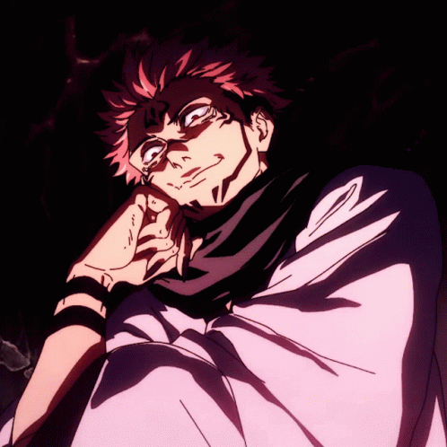

Sukuna (Jujutsu Kaisen)

Sukuna is a powerful curse from the anime series Jujutsu Kaisen. He is known as the King of Curses and is feared by both humans and curses alike. Sukuna is a complex character with a dark and mysterious past, driven by a desire for power and revenge against the Jujutsu Sorcerers. He is a formidable opponent, capable of taking on multiple enemies at once and using his immense power to crush his foes.
Back to Main
Back to Top